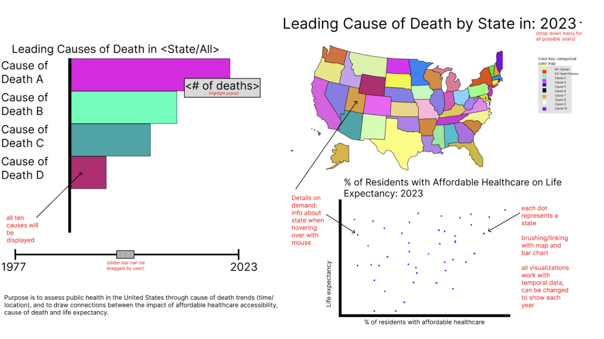

Michael Sun, Noah Bunis, Margaret Potagal, Madison Sansone
Project-long Course Project as part of COSI 116A: Information Visualization, taught by Prof. Dylan Cashman, Brandeis University.
Summary of user needs and motivating questions.
The United States is currently facing a health crisis, marked by alarmingly high rates of cardiovascular disease, limited access to mental health resources, and a healthcare system that ranks poorly compared to other wealthy nations. The purpose of our project is to analyze health data in the United States across time and states, aiming to uncover patterns and trends that may enhance our understanding of this issue. We intend to do this by narrowing our scope to exploring heart disease, the leading cause of death in the United States. To do so, we will analyze the age adjusted heart disease death rate per state from 1999-2022. We will also be plotting our heart disease data against life expectancy and COVID-19 death rates per state to see if there are any interesting patterns or trends across data sets. Our visualization will provide insight on how location and time period have impacted the livelihood of Americans. Originally, our target audience was health professionals, but through our research process we came to the conclusion that our visualization can lend itself to both the general public and health experts. To accomplish this, we strive to make an easily understandable, yet detailed and informative visualization. Our visualization aims to help Americans reflect on their own health as well as provide insight on the evolving landscape of heart disease in the United States to health professionals. Experts in the field may be able to better understand who is most at risk as well as use their knowledge to connect the dots on the causes of the changes seen overtime.
Include the interactive visualization as part of this page. Static example follows.
Embedded MP4 demo video using the HTML5 <video> tag. For example, this screen recording Prof. Cody Dunne made of Mike Bostock's flexible transitions in D3 slide:
Final visualization screenshots (PNG images), design justifications, UI walk-through, and linked presentation slides.
Originally, our group was planning to explore a dataset on the ten leading causes of death by state, from 1999-2017. Our intention was to examine trends both overtime and geographically until 2022 to gain insights on the impact of COVID-19. We also wanted to relate this to the percentage of state residents with access to affordable healthcare through interaction with an additional visualization. Ultimately we were unable to find state data for ten leading causes of death from 2018 onwards. During peer review, we were also given consistent feedback that narrowing our focus would make our visualization more effective. In order to accommodate missing data and our feedback, we pivoted to focus on only heart disease, the leading cause of death across the United States. This helps us ensure that our visualizations all compliment one another and still fulfills our primary domain task, “What do you consider the most prominent healthcare issues in the United States? Is that different now versus 50 years ago?” We are using three datasets for out final visualization. Our primary data set contains the Age Adjusted Heart Disease Death Rate per state from 1999-2022 in JSON format, obtained by the CDC. Our second data set contains the life expectancy per state in 1999-2022, obtained from **. Our final dataset contains the COVID-19 Age Adjusted Death Rate per state from 2020-2022, also obtained from the CDC. For each data set, we manipulated the data so that each year is an object that has key-value pairs connecting each state to its respective datapoint.
Based on our interview responses, we identified six potential domain tasks. Our final visualization successfully answers our #1 ranked domain task, “What do you consider the most prominent healthcare issues in the United States? Is that different now versus 50 years ago?” As a group, we decided that heart disease should be considered one of the most prominent healthcare issues in the United States as it has been the leading cause of death for decades. The low-level tasks associated with this domain task are Identify and Compare, which we fulfill through user interactivity. The user can easily compare states across time as well as different regions of the United States to one another. At the middle level, our visualization satisfies the Lookup task where users already know both what they’re looking for and where it is- in other words, both the target and location are known. Users can look up the data for a specific state at a specific year through the drop down menu and details on demand in our map. On a high-level, the purpose of this domain task is to Derive and Discover. New data is derived through our scatter plot which plots the relationship between life expectancy, COVID-19 Age Adjusted Death Rate, and Heart Disease Adjusted Death Rate. Additionally, the user can discover insight about the data by hovering over marks and using interaction to view the data through different visual encodings. In this way, users can use our visualization to find new knowledge that was not previously known to them. Our visualization is meant to be easily digestible to a wide range of users with a variety of medical experience. Our visualization begins to answer our 5th ranked domain task, “Has COVID-19 generated outliers in public health?” in specific relation to heart disease. If given more time, we would have like to further explore COVID-19 and its effect on public health with more depth.
Sketches and design choices to justify final visualization.
Expectation: Evidence of iterative improvement. Logical discussion of design choices grounded in theory from course. Discusses feedback from usability testing.
Our group was able to successfully create three different visualizations that use both geographic and temporal data, all linked to one another. We synthesized our own JSON data sets by manipulating multiple data sets from reliable sources such as the CDC. We implemented details on demand for the marks of all three visualizations, giving the user the necessary contextual information to understand our data in full. If given the opportunity in the future, our group intends to look further into COVID-19 data and find a way to integrate it into our current visualization. A potential way to measure the effectiveness of our visualization in the future is to observe our target users after deployment in a field study. An area that we could have improved upon was ensuring that we were not missing any data before finalizing our design idea. We had to heavily revise our final visualization in comparison to our formal sketch on Figma. Also, our code could have been more organized and clear with the addition of comments.
List here where any code, packages/libraries, text, images, designs, etc. that you leverage come from.